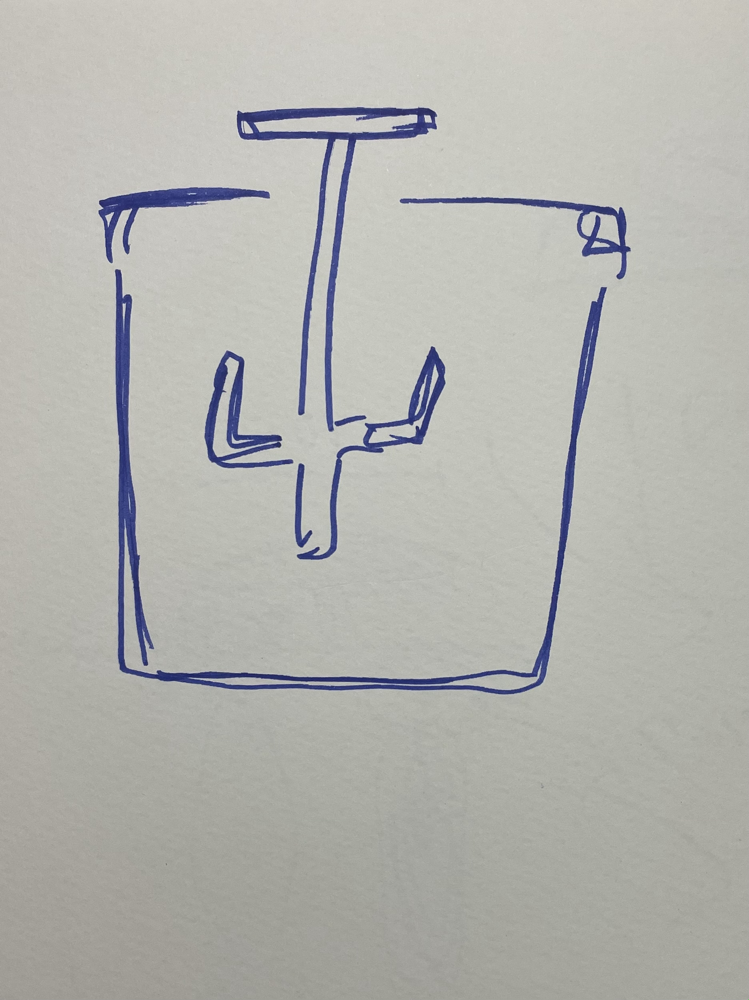
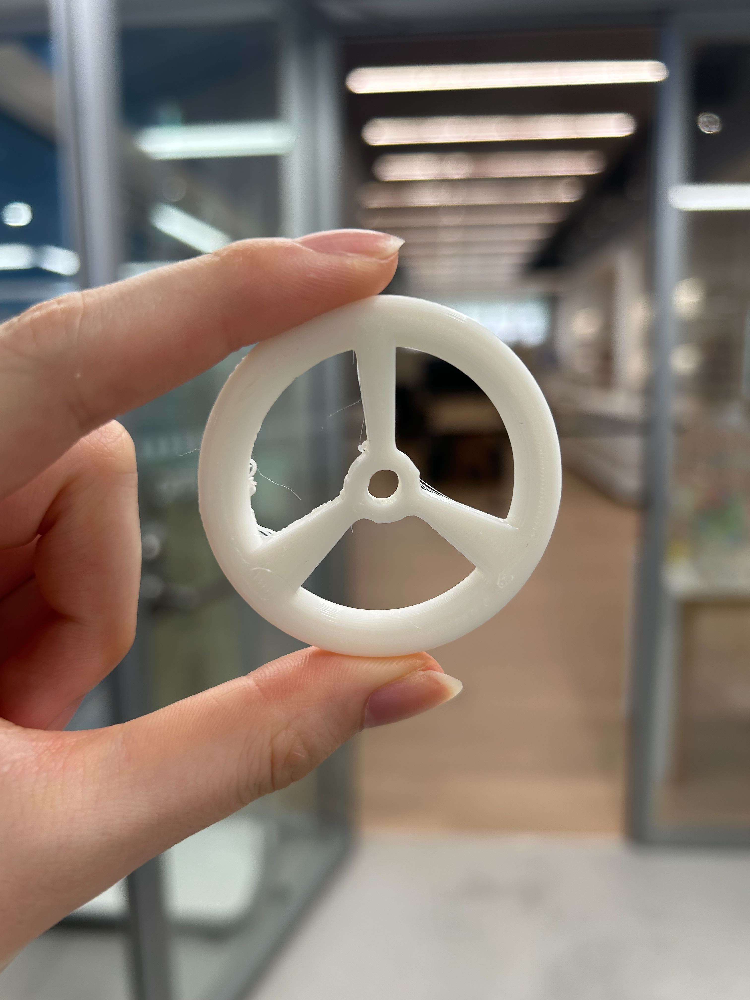
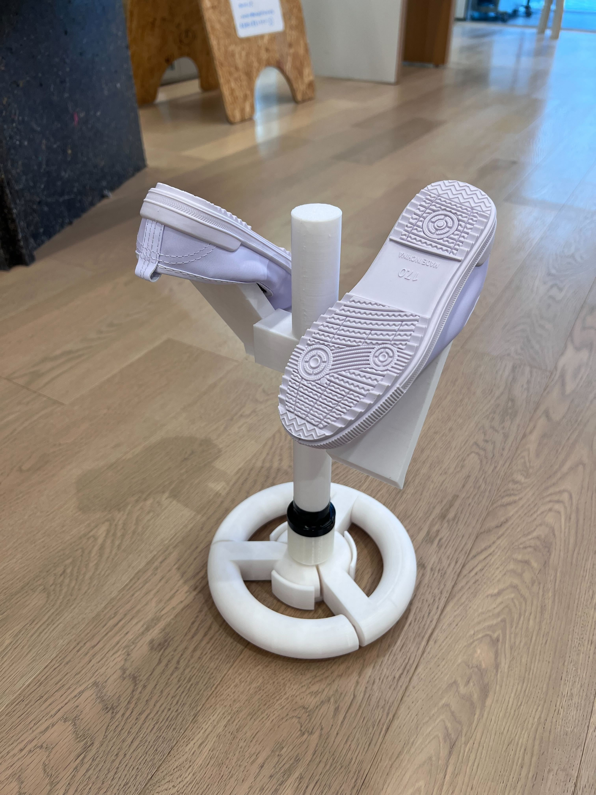
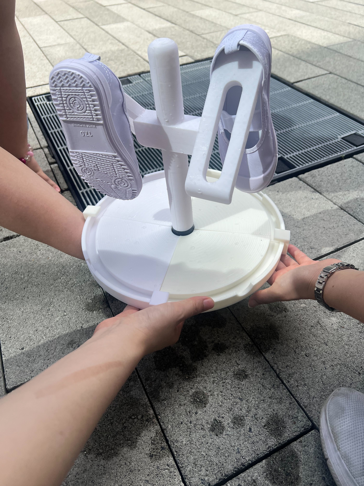
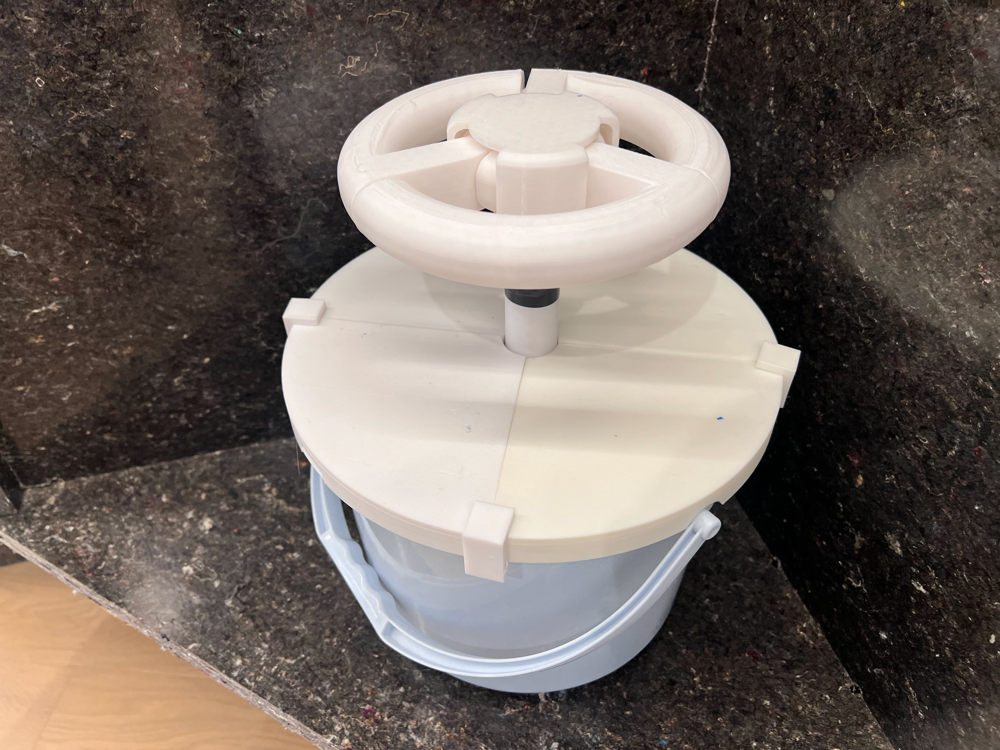
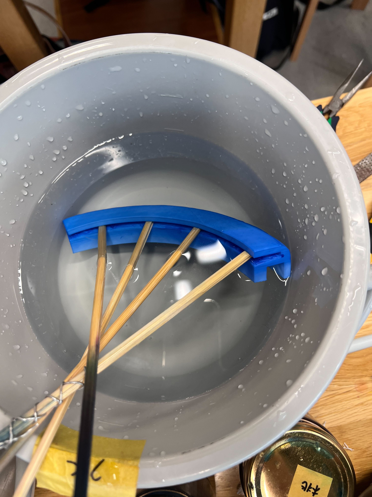
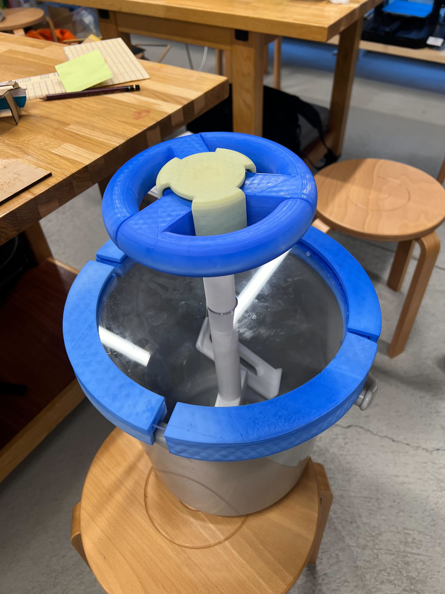
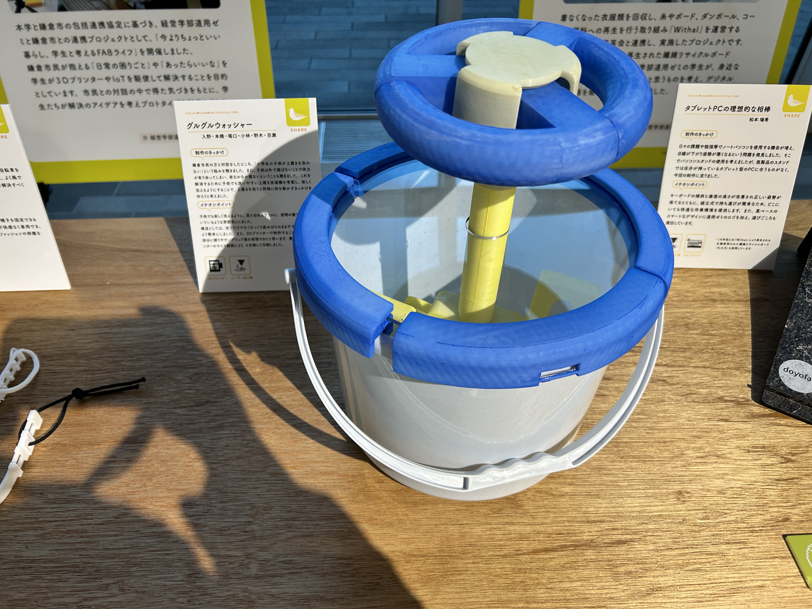

★制作@上履き
・悩み
上履きをなかなか洗わない。洗ってと言うのもストレス。
干すときに本体と中敷がバラバラになってしまう
・解決策
ミニ洗濯機みたいなもので洗う?
→イメージ:フック部分に上履きをかけて洗う
野菜の水切りのものや手動洗濯機の形を参考に、水の入ったバケツのハンドルを回すと中が動き、それによって上履きが洗われる。こんな感じを目指してみる。

・試作（ミニサイズ）
(ミニサイズのハンドル部分)

→上履きの洗い方は結果、洗濯機のように回して洗う方向で決まった。
しかし、子ども自身が洗うということで、どういう構造がいいのか、安全性や使いやすさを考えていった。
洗うための構造は縦型で、ハンドル・蓋・軸とフックの３つを組み合わせて、バケツ（ダイソー）につけて使うことに。
・6人で制作するので分担
ハンドル:
KAHO
→
ハンドル制作ページ
蓋:
みる、
LISA、
neKobayashi
軸とフック:
百瀬、
野木
・干すのはどうする？
上履きを洗うだけじゃなく、干すところまで一貫して行いたい
-----→ひっくり返したら干せるようにしたらどうか？
→ここでひっくり返したら、水はけと、上履きをかけるフックの部分に問題が…
蓋は裏側を中心に向かって斜めにすることで水はけをよくすることに、＆フックはひっくり返しても大丈夫な構造に変更
↓とりあえずひっくり返して干せそう。

↓蓋は裏面を斜めにすることで、水が流れていくように設計

→完成

色付け
「子供が使うものだから、カラフルな方がいいよね！」という意見をもとに、着色をした。
着色方法
1.アクリル用の染料を鍋に入れて（または瓶に入れて湯煎して）温度を80度前後にする。
2.着色したいものを染料の中に入れて、菜箸を使いながら色付ける。
3.洗剤を溶かした水に入れる。
4.水につけて洗剤を落とす。
注意!!!!
とても熱いので素手で触らない。服につくと2度と取れないので白い服は着ない。
また、今回は3Dプリントしたものが、出力時間を短縮する目的で密度をかなり下げていたため、
着色の際、中の空気が温められて膨張し、ボコボコした見た目になってしまった。
そしてPLAは温められると歪みやすく、下の写真のように隙間に棒を差し込まないといけなくなってしまった。
→着色したいものがあったら、密度をしっかり持たせると見た目が変わらずに済むし、歪みにくい構造のものにするべき。

完成！

補足
ちょうどファブラボの展示を行っていたので、参加！

紹介動画